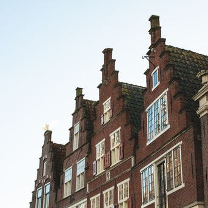

Residentieel vastgoed
VMInvest neemt een pragmatische positie in binnen de residentiële vastgoedmarkt, waarbij het niet alleen als bemiddelaar optreedt maar ook, indien noodzakelijk, bereid is om als joint-venture partner op te treden dan wel, via haar netwerk, andere partijen aan te dragen om te participeren in projecten. De focus loopt van appartementencomplexen tot eengezinswoningen, met bijzondere aandacht voor seniorenhuisvesting.
Meer
Deze flexibele benadering stelt het bedrijf in staat om effectief in te spelen op de uiteenlopende
behoeften van de markt en bij te dragen aan de realisatie van vastgoedprojecten met een toegevoegde
waarde voor de gemeenschap. Het bedrijf richt zich op het leveren van doordachte oplossingen voor de
uitdagingen waarmee de residentiële vastgoedsector wordt geconfronteerd, waarbij een balans wordt
gezocht tussen duurzaamheid, functionaliteit en esthetiek. VMInvest streeft ernaar om aan de huidige
woningvraag te voldoen, terwijl het ook anticiperend optreedt op toekomstige ontwikkelingen binnen de
sector.
De benadering van VMInvest in projectuitvoering is gericht op samenwerking en klantgerichtheid. Door het
opbouwen van sterke relaties met opdrachtgevers en partners slaagt het bedrijf erin om projecten te
ontwikkelen die zowel economisch levensvatbaar als maatschappelijk relevant zijn. Deze aanpak
faciliteert een gestroomlijnde realisatie van projecten die positief bijdragen aan de woningmarkt en
lokale gemeenschappen.
Een bijzondere focus binnen het aanbod van VMInvest is de ontwikkeling van seniorenhuisvesting, een
sector die steeds belangrijker wordt gezien de demografische ontwikkelingen. Het bedrijf erkent de
specifieke behoeften en uitdagingen van deze doelgroep en werkt aan de realisatie van woonoplossingen
die niet alleen veilig en comfortabel zijn, maar ook de sociale cohesie en het welzijn van ouderen
bevorderen. VMInvest is zich bewust van het belang van duurzaamheid in de vastgoedsector en neemt
actieve stappen richting het realiseren van ‘Paris Proof’ vastgoed. Hoewel de weg naar 2050
ambitieus en uitdagend is, toont het bedrijf een duidelijke inzet voor het verduurzamen van haar
projecten.